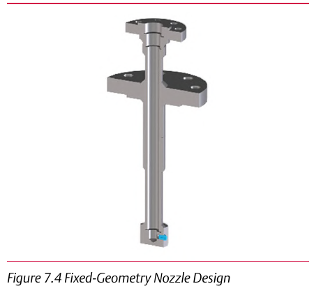

Fixed-Geometry Nozzle Desuperheater

- 1Rangeability up to 5:1
- 2Steam velocities as low as 25-30 ft/s
- 3The simplest, most constrained design — suited to nearly constant loads
Control Valve Handbook, 6th ed., Fig. 7.4. Component Index: cvh-cmp-fixed-geometry-nozzle.